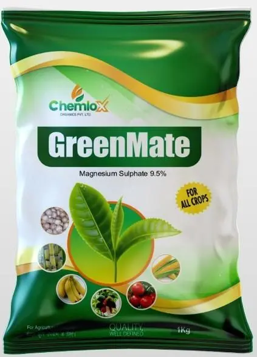

Our Featured Products



Empowering farmers with sustainable and effective agricultural products for enhanced crop yield and quality.
Our products are designed to be environmentally sustainable while maximizing crop yield
Scientifically developed formulations for optimal nutrient delivery to plants
Enhance plant vigor, stress tolerance, and overall crop productivity
Products designed with the farmer's needs and challenges in mind

Director
Mr. Purushotham is a highly experienced professional with nearly 18 years of expertise in production planning, quality control, and research & development. His leadership drives our commitment to innovation and excellence in agricultural solutions.
Learn More
Director
Mr. Ch. Venkat Reddy is a dynamic professional with exceptional business acumen, leadership qualities, and operational management expertise. His visionary approach drives Chemlox Organics towards excellence through quality, collaboration, and sustainable business development.
Learn MoreChemlox GreenMate has significantly improved my paddy yield. The plants are healthier and more resistant to stress.
NutriMix has transformed my mango orchard. The fruits are larger, shinier, and the overall yield has increased by 30%.
Chemlox Humic G has improved my soil quality tremendously. I've noticed better water retention and nutrient uptake in my crops.
Contact our team of experts for personalized agricultural solutions
+91 8143074306
chemloxorganics@gmail.com